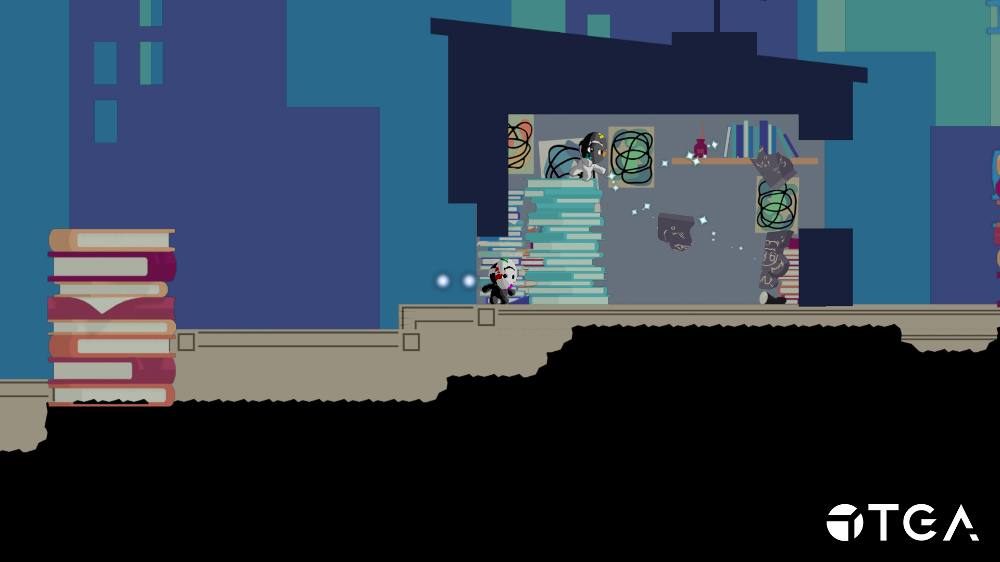
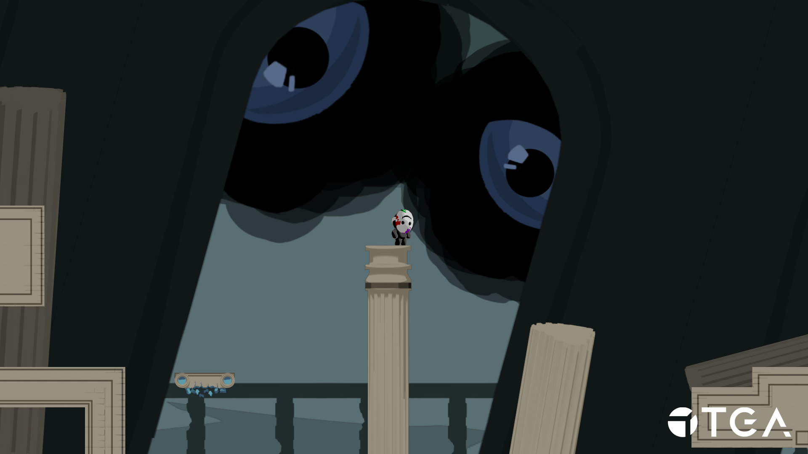
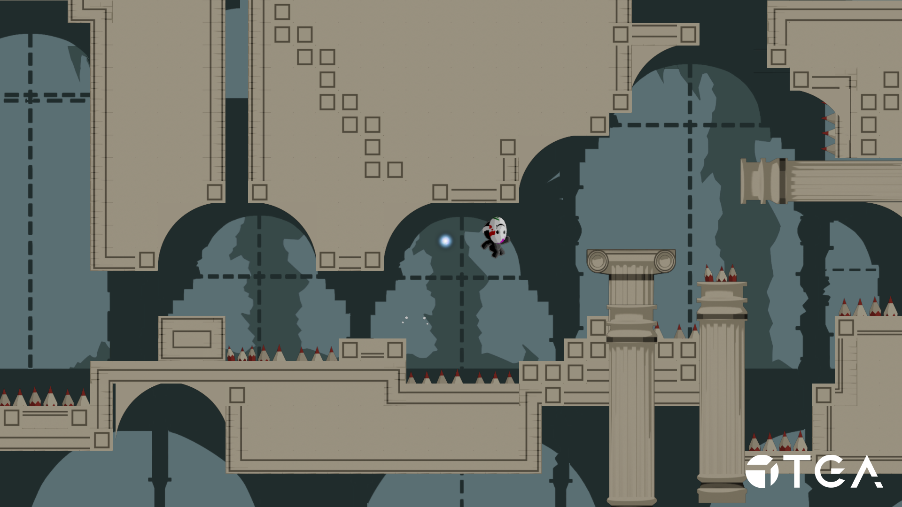
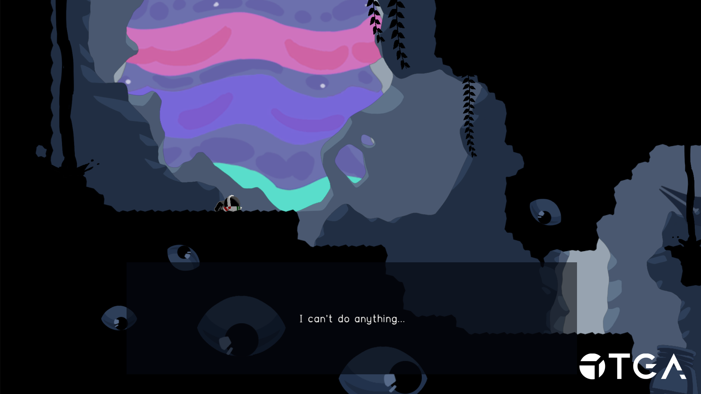
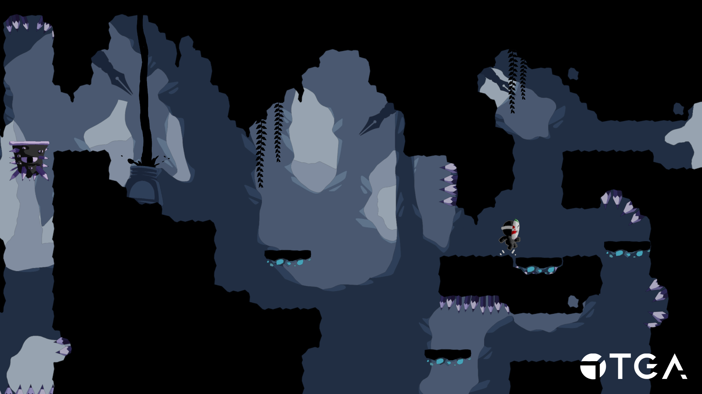

This was the first project were we used TGA's own engine TGE. It is a simpler engine than Unity which required us to build more of our own pipelines and underlying architecture. We still used Unity as a level editor and imported the level to TGE. In the game you play as a depressed artist and as you traverse your own mindspace rediscovers your passion for art.




